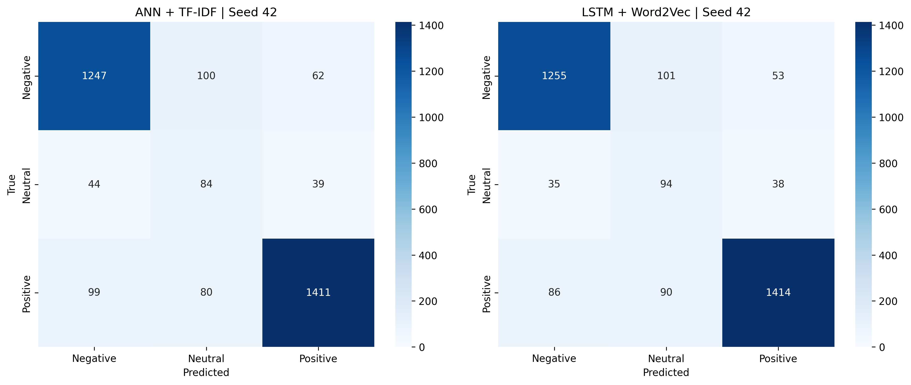
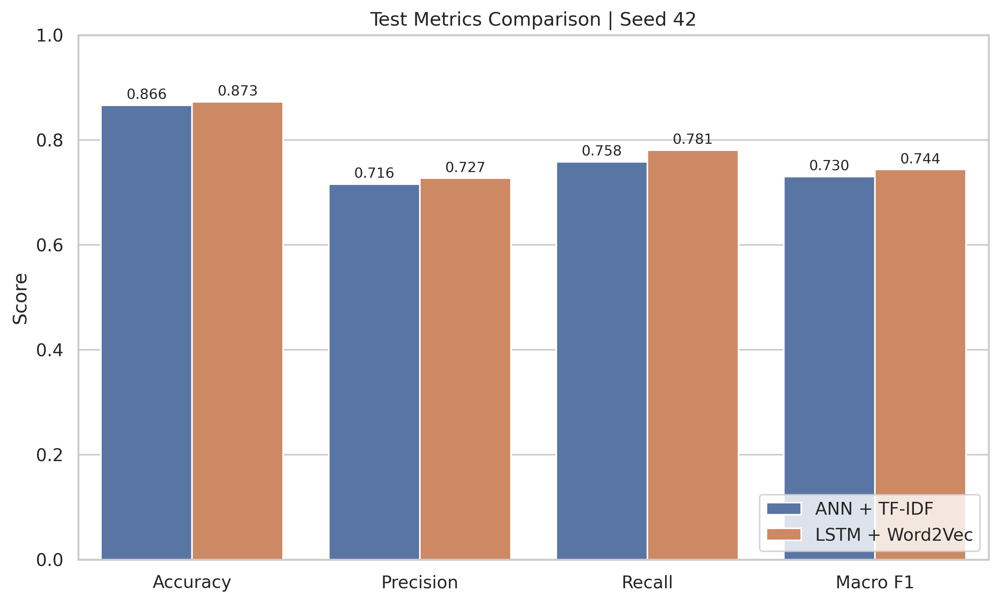

📋 Kết quả Validation (Multi-seed)
Dùng để lựa chọn mô hình và tinh chỉnh siêu tham số.
📑 Bảng so sánh
| Mô hình | Accuracy | Precision | Recall | Macro F1 |
|---|---|---|---|---|
| ANN + TF-IDF | 0.8929 ±0.0024 | 0.7483 ±0.0025 | 0.8208 ±0.0077 | 0.7706 ±0.0019 |
| LSTM + Word2Vec | 0.8932 ±0.0025 | 0.7586 ±0.0064 | 0.8216 ±0.0070 | 0.7807 ±0.0063 |
📈 Biểu đồ so sánh
🎯 Kết quả Test (Multi-seed)
Đánh giá cuối cùng trên dữ liệu chưa thấy. Không dùng để điều chỉnh mô hình.
📑 Bảng so sánh
| Mô hình | Accuracy | Precision | Recall | Macro F1 |
|---|---|---|---|---|
| ANN + TF-IDF | 0.8628 ±0.0023 | 0.7137 ±0.0023 | 0.7629 ±0.0035 | 0.7282 ±0.0024 |
| LSTM + Word2Vec | 0.8707 ±0.0019 | 0.7273 ±0.0012 | 0.7868 ±0.0063 | 0.7444 ±0.0018 |
📈 Biểu đồ so sánh
🚀 Mức độ cải thiện (LSTM vs ANN)
Trên tập test, LSTM + Word2Vec vượt trội ANN + TF-IDF ở tất cả 4 metrics.
📊 Improvement chart
✅ Chi tiết cải thiện
Accuracy
+0.0079
Macro Precision
+0.0136
Macro Recall
+0.0239
Macro F1 ⭐
+0.0162
⭐ Macro F1 là metric quan trọng nhất
vì dataset mất cân bằng và class Trung lập khó phân loại hơn.
🖼️ Biểu đồ đánh giá (Seed 42)
Một seed đại diện. Kết quả cuối được tính trên 4 seed để đảm bảo độ ổn định.

Hình 1. So sánh confusion matrix giữa ANN+TF-IDF và LSTM+Word2Vec trên seed 42

Hình 2. So sánh các metrics giữa ANN+TF-IDF và LSTM+Word2Vec trên seed 42
🔍 Key Findings
Những phát hiện chính từ thực nghiệm.
TF-IDF là baseline mạnh
ANN + TF-IDF hoạt động tốt vì nhiều câu phản hồi sinh viên chứa từ khóa cảm xúc rõ ràng.
Tuy nhiên, TF-IDF không bảo toàn thứ tự từ nên gặp khó với phủ định và đối lập.
LSTM nắm bắt ngữ cảnh tốt hơn
LSTM + Word2Vec đọc câu tuần tự, giúp mô hình xử lý phủ định, cấu trúc đối lập,
và cảm xúc hỗn hợp tốt hơn. Ví dụ: "Nhiệt tình nhưng giải thích khó hiểu"
— LSTM xử lý cấu trúc này hiệu quả hơn.
Class Trung lập là khó nhất
Phản hồi Trung lập thường ít từ khóa cảm xúc rõ ràng và dễ nhầm với Tích cực/Tiêu cực yếu.
LSTM cải thiện nhận dạng class này — đây là lý do chính dẫn đến Macro F1 cao hơn.
LSTM + Word2Vec là mô hình tốt nhất
Với Macro F1 = 0.7444 ± 0.0018 trên test set (so với 0.7282 ± 0.0024 của ANN),
LSTM vượt trội ở tất cả metrics và ổn định hơn qua nhiều seed.